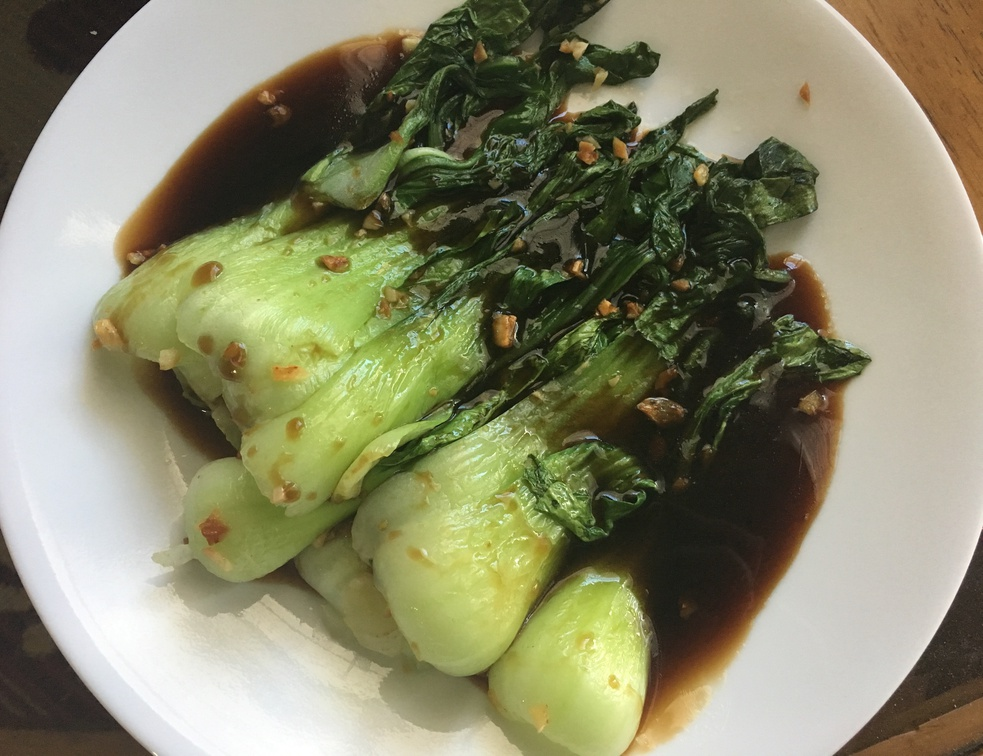
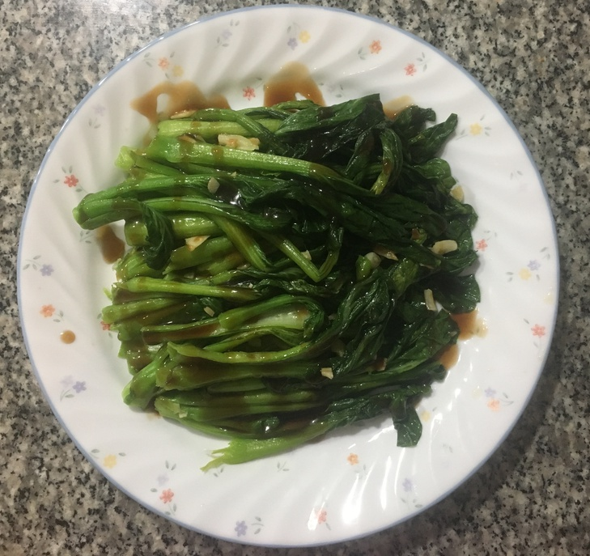

| Other | Meat | Veggie | Fruit |
|---|---|---|---|
| oyster sauce | bok choy | ||
| soy sauce | chinese broccoli | ||
| sugar | garlic | ||
| wonton soup base |
| instructions |
|---|
| Blanche bok choy |
| Mix 3 oyster sauce : 1 soy sauce : 2 sugar, and some wonton soup base or water |
| Stir fry garlic until golden |
| Stir fry bok choy for a couple minutes |
| Add water and steam for a couple minutes |
| Arrange on plate and drizzle with sauce |